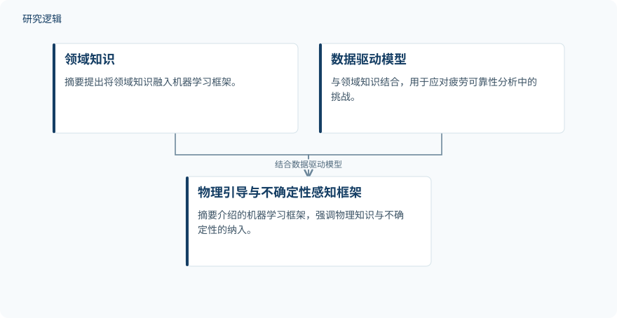

摘要解读
人工智能与机器学习在疲劳分析中的应用
Fatigue Analysis with Artificial Intelligence and Machine Learning
解读更新 2026-11-10 15:31 · 依据公开摘要整理，未核验全文细节
当疲劳数据有限、预测又面临高度不确定性时，人工智能如何服务于可靠性评估？本章摘要的阅读价值，在于将物理知识与不确定性处理放在机器学习应用的核心位置，而不只是罗列预测工具。
文章目录
疲劳可靠性的难点：数据有限，不确定性高
本章讨论人工智能与机器学习在疲劳分析和可靠性评估中的应用，覆盖数据分析、寿命预测、裂纹检测与代理建模。摘要特别指出，相较于许多工程应用，疲劳可靠性具有数据可用性有限、不确定性高的特点，这给数据驱动方法带来了独特挑战。
让领域知识进入数据驱动模型
针对上述挑战，本章介绍物理引导、具备不确定性感知能力的机器学习框架，将领域知识与数据驱动模型结合。这里的重点不仅是利用数据建立预测关系，也包括在人工智能模型中纳入不确定性，以支持稳健、可靠的预测；摘要没有展开具体实现方式。
在模型与任务层面，本章讨论包括深度学习架构在内的神经网络，用于 S-N 曲线预测、裂纹扩展建模，以及制造过程和微观组织建模。摘要还提到面向先进疲劳设计的神经优化方法，但未说明其目标函数、约束条件或求解细节。
依据摘要整理的知识与模型融合示意


仅展示摘要明确提出的融合关系，不表示具体算法流程、实验配置或验证结果；此图不是论文原图。
下载 SVG图示关系说明
实线表示相邻阶段的信息流，虚线表示跨阶段联系或反馈。
领域知识 → 物理引导与不确定性感知框架：融入领域知识；数据驱动模型 → 物理引导与不确定性感知框架：结合数据驱动模型
摘要呈现的是应用梳理，而非性能胜负
摘要给出的主要内容是方法与应用方向的梳理，没有报告可量化的实验发现。其明确强调：不确定性应纳入人工智能模型；物理模型与机器学习结合的混合方法，是值得关注的未来研究方向。不能据此认定某种模型已经优于传统方法，也不能把所述应用潜力等同于已经验证的工程效果。
样本、比较与验证范围仍需查阅正文
仅凭本次完整摘要，无法判断所涉及的数据来源、样本规模、材料与载荷范围，也无法确认训练和测试如何划分、采用了哪些比较基线，以及验证是否覆盖不同工况。对于不确定性的表达方式、物理知识的嵌入机制和神经优化的设计表现，摘要同样未给出细节。这些是当前资料的边界，不代表章节正文没有相关讨论或验证。
阅读启发：先看可靠性如何进入模型
阅读启发：对关注疲劳可靠性与结构设计的读者，后续阅读可围绕几个具体问题展开：领域知识如何与数据模型结合？不确定性如何被表示并参与预测？神经优化如何连接疲劳分析与设计目标？这些问题直接对应摘要的主线，有助于区分应用愿景、方法介绍与验证证据，而不预设性能提升。
以上为本站阅读启发与建议，不是论文已验证的结论。